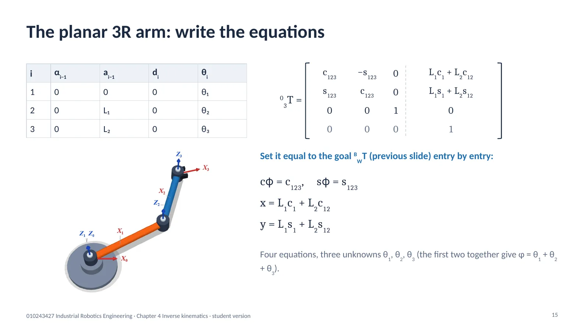
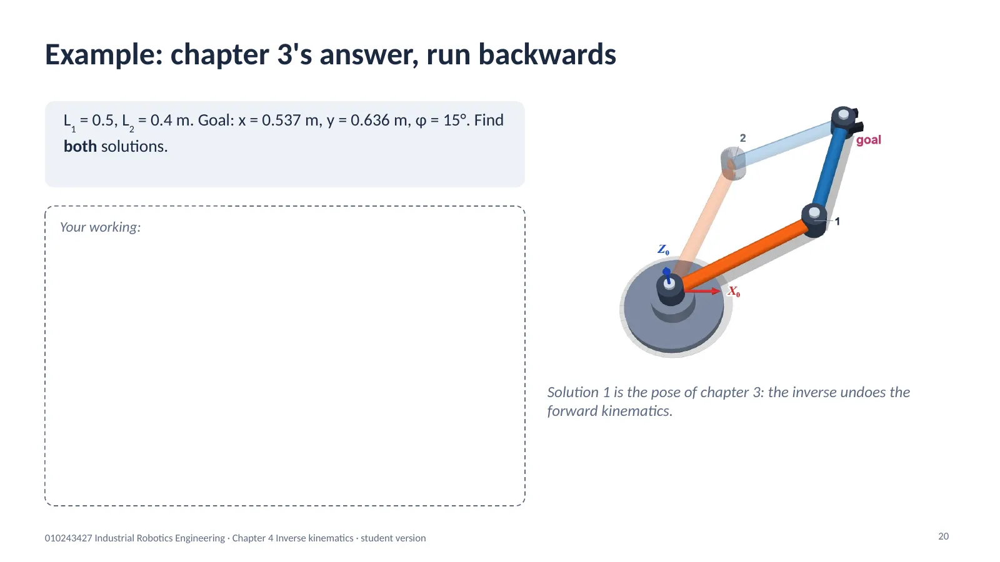
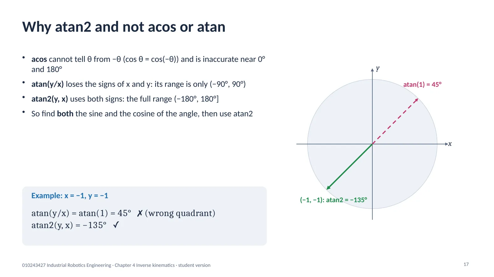
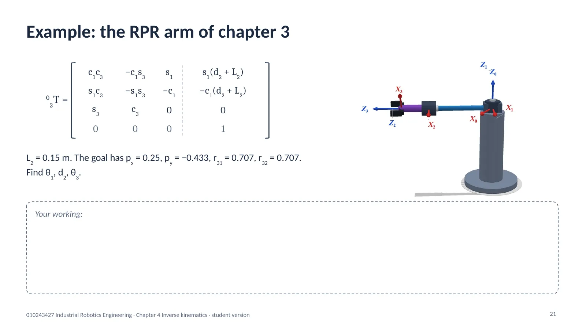
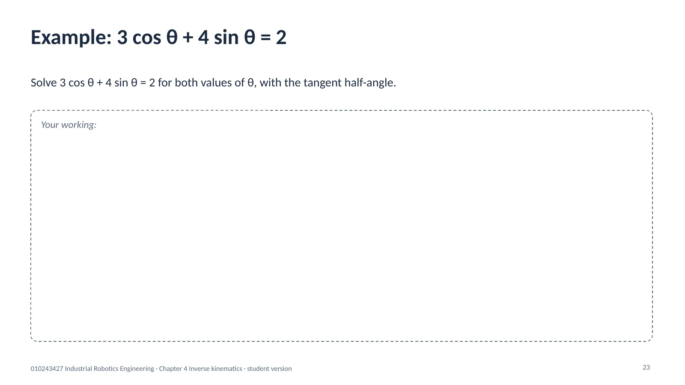

เทียบ ⁰ₙT ของแขน (จากบทที่ 3) กับเฟรมเป้าหมายทีละช่อง ได้สมการที่มี sin และ cos ของมุมข้อต่อ แล้วจัดการด้วยพีชคณิต: ยกกำลังสองแล้วบวก แยก sin กับ cos ออกมาทั้งคู่ แล้วใช้ atan2 หน้านี้แก้แขน 3 ข้อต่อในระนาบด้วยตัวเลขของบทที่ 3 (สไลด์เดิมไม่มีตัวอย่างตัวเลข) แขน RPR และสมการรูป a cos θ + b sin θ = c ด้วยการแทนครึ่งมุม (Craig 4.5) ครอบคลุมสไลด์หน้า 15–23 และ 41 มี เครื่องมือ 1 ชิ้น (A) และ 4 โจทย์
Compare the arm's ⁰ₙT (from chapter 3) with the goal frame entry by entry: the equations hold sines and cosines of the joint angles. Then algebra: square and add, get both the sine and the cosine, use atan2. This page solves the planar three-joint arm with chapter 3's numbers (the old slides had no numerical example), the RPR arm, and a cos θ + b sin θ = c with the tangent half-angle (Craig 4.5). It covers slides pp. 15–23 and 41, with one tool (A) and 4 problems.


เส้นเขียวคือ atan2(y, x) ซึ่งชี้ไปที่จุดเสมอ เส้นประชมพูคือ atan(y/x) ลากจุดไปทางซ้ายของแกน y (x < 0) เส้นประจะชี้ไปผิดด้าน 180° เพราะ y/x ไม่รู้ว่าเครื่องหมายมาจาก x หรือ y
The green line is atan2(y, x): it always points at the dot. The dashed pink line is atan(y/x). Drag the dot left of the y axis (x < 0): the dashed line points 180° the wrong way, because y/x cannot tell whether the sign came from x or from y.

